Luồng sale & event (cơ bản)
Bản đọc nhanh cho người mới vào dự án Block Out! – Color Sort Puzzle: game kiếm tiền và giữ chân người chơi bằng những gì, các sự kiện chạy theo vòng đời nào, và một buổi chơi thật trông ra sao.
- Game
com.grandgames.catblockjambản 1006 của Grand Games, chung codebase với Magic Sort. Vì vậy nhiều tên trong code vẫn là tên cũ: Block Pass làMagicPass, Mission Carnival làMagicLab, Star Blaze làGAE, Super Rocket làLightBall, Supply Box làButler, Lily Leap làSkyJumpWithStage, Rocket Race làJetpackRaceWithStage, Streak Race làStreakTournament, Dragon Treasure làTreasureDrill. - Số liệu lấy từ config server đã cache trên máy (Firebase Remote Config + backend Grand Games, lần fetch cuối 22/09/2026) và từ buổi chơi thử ngày 07/10/2026 trên LDPlayer.
- Ảnh là ảnh chụp thật trong game. Ảnh ghi "ép bật" là tính năng server đang tắt, được bật tạm trên máy để chụp.
- Giá VND là giá Google Play hiện trong game (bản cài từ Play Store, tài khoản Việt Nam). Giá USD là
dollarEquivalenttrong config. Không có giao dịch nào được thực hiện: mọi bảng thanh toán đều đã hủy. - Trong chú thích ảnh, "pháo" (pháo băng) là booster Time Freeze.
Điều kiện buổi chụp (đọc trước khi dùng mục 2 và 6):
- Tài khoản thử thuộc segment
non-purchaser, chưa nạp tiền. Bắt đầu ở level 320, kết thúc ở level 350. - Coin ~1.000.000 và mỗi booster 999 là do đã sửa từ trước để thử, không phải giá trị của người chơi thật.
- Bố cục màn 320–349 được thay tạm bằng bố cục màn 1 (3 khối) để thắng nhanh. Thời gian, độ khó và nhãn Hard / Super Hard vẫn là của màn thật. Lần chơi đầu màn 320 (thua vì hết giờ) và màn 350 là bố cục thật.
- Vài giá trị khác cũng được sửa tạm trong lúc chụp: mạng về 0 (để thấy popup hết mạng), coin hạ xuống 1.500 (để thử Paw Touch).
- Đã tắt tạm: giới hạn popup (
PopUpLimitConfigModel), chơi liền màn (ContinuousLevelsConfigModel, không có tác dụng ở level ≥ 10) và cấu hình quảng cáo backend (AdConfigModelFromBackend, tắt sau màn 321). - Ép bật tạm rồi khôi phục: Special Offer, Paw Touch Offer, Treasure Drill, Web Shop, ép cập nhật.
1. Kinh tế trong một trang
Tóm lại: chỉ có một loại tiền là coin (không có gem); coin dùng để nạp mạng, mua booster và mua thêm giờ khi hết giờ. Thắng màn cho 20 / 60 /  100 coin tùy độ khó, còn mạng vô hạn và booster chủ yếu đến từ sự kiện và gói IAP.
100 coin tùy độ khó, còn mạng vô hạn và booster chủ yếu đến từ sự kiện và gói IAP.
| Hạng mục | Giá trị | Config |
|---|---|---|
| Tiền và vật phẩm | Coin là tiền duy nhất. Booster trong màn: Time Freeze, Rocket, UFO. Pre-booster: tên lửa và đồng hồ +10 giây gắn sẵn lên khối. Thưởng mạng thường là "mạng vô hạn" theo thời gian (15 phút, 30 phút, 1 giờ…) | CurrencyType |
| Mạng | Tối đa 5 (8 khi đã mua Block Pass). Hồi  1 mạng / 30 phút. Refill 900 coin; trên máy, Refill đưa từ 0 lên "5 Full". Mạng bị trừ ngay khi vào màn (trừ màn 1) 1 mạng / 30 phút. Refill 900 coin; trên máy, Refill đưa từ 0 lên "5 Full". Mạng bị trừ ngay khi vào màn (trừ màn 1) | gameEconomyModel |
| Thêm giờ khi hết giờ (Add Time / Play On) | +30 giây. Giá 900 → 1.900 → 2.900 coin cho lần 1, 2, 3 trong cùng màn; từ lần 4 giữ 2.900. Bom nổ cũng được +30 giây. Lần đầu miễn phí: tắt. Xem quảng cáo để thêm giờ: tắt | GrandCachedPlayOnConfig (backend thắng; Firebase ghi 900 / 900 / 900) |
| Booster mua lẻ (khi hết) | Time Freeze 300 (đóng băng 10 giây), Rocket 600, UFO 1.200 coin. Không có mốc mở booster | gameEconomyModel |
| Pre-Booster (từ level 12) |  3 tên lửa = 1.800 coin; 3 đồng hồ +10 giây = 900 coin 3 tên lửa = 1.800 coin; 3 đồng hồ +10 giây = 900 coin | preBoosterConfigModel |
| Thưởng thắng màn | Thường 20, Hard 60, Super Hard 100 coin. Hard là các màn có số tận cùng 4, Super Hard tận cùng 9 (mỗi loại 99 trên 999 màn). Nút Play hiện "x3" / "x5" | AdConfigModel (backend) |
| Người chơi mới | 1.000 coin;  3 Time Freeze, 3 Rocket, 3 Time Freeze, 3 Rocket,  3 UFO; 3 tên lửa + 3 đồng hồ pre-booster 3 UFO; 3 tên lửa + 3 đồng hồ pre-booster | gameEconomyModel |
| Quy đổi | Gói coin rẻ nhất: 1.000 coin = 1,99 USD (52.000 VND). Một lần thêm giờ đầu (900 coin) ≈ 45 màn thường, ≈ 1,79 USD | tính từ storeConfigModelV2 |
Block Out chỉ thua theo 2 cách: hết giờ hoặc bom nổ. Không có nhánh "hết nước đi" như Magic Sort. Vì vậy mọi điểm kẹt đều đi qua popup "Out Of Time", và giá thêm giờ nhiều khả năng là chỗ tiêu coin chính (suy luận; xem mục 3).

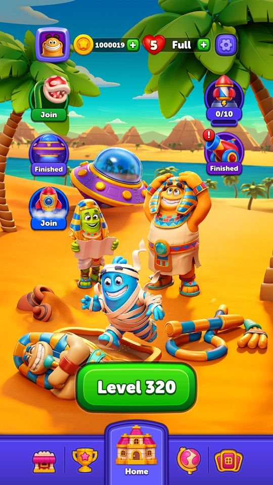
5 mạng Full; cột trái 3 icon sự kiện (Join / Finished / Join), cột phải icon tên lửa 0/10 và icon pháo (Finished, dấu !); poster nền Ai Cập; thanh dưới Shop, Leaderboard, Home, bản đồ, bộ sưu tập 0 mạng, đếm ngược tới mạng kế, Refill 900 coin; không có nút xem quảng cáo (đã tắt cấu hình quảng cáo backend)
0 mạng, đếm ngược tới mạng kế, Refill 900 coin; không có nút xem quảng cáo (đã tắt cấu hình quảng cáo backend) 900 coin, mạng "5 Full", quay lại popup trước màn
900 coin, mạng "5 Full", quay lại popup trước màn 1.200 coin
1.200 coin
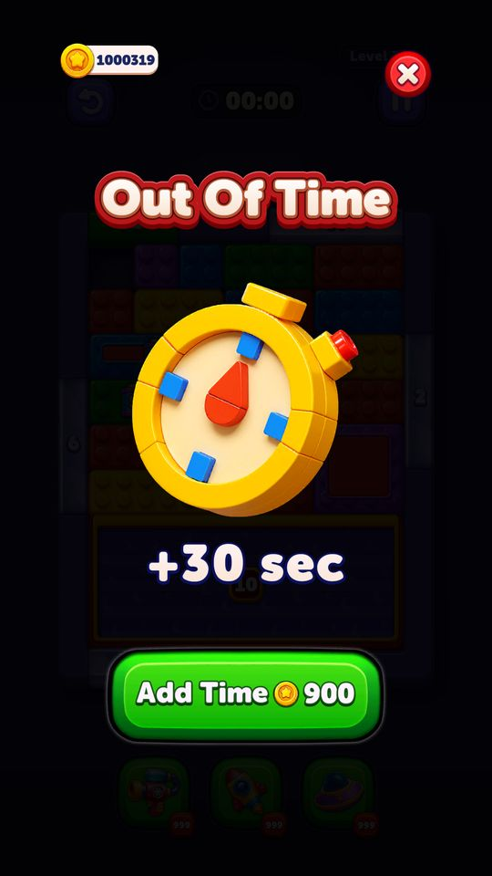
900 coin (lần 1), nút X để bỏ cuộc
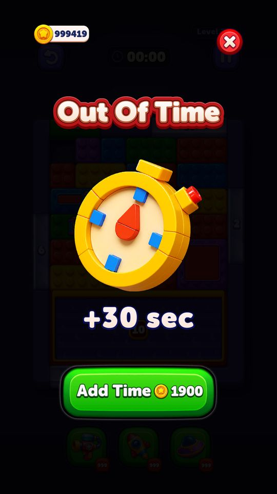
1.900 coin (bậc 3 là 2.900)
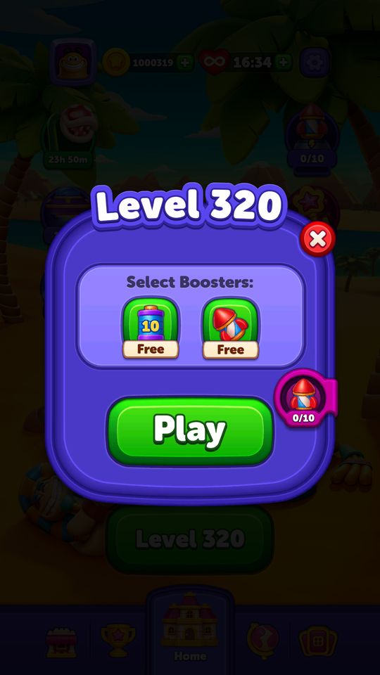

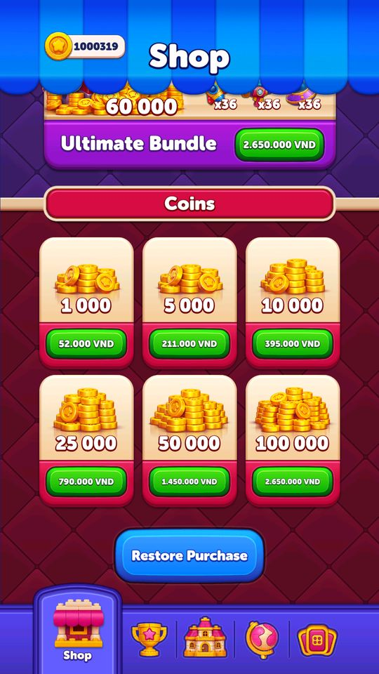
2. Vòng lặp một màn chơi
Tóm lại: mỗi màn có đồng hồ đếm ngược và kết thúc bằng một trong ba nhánh: thắng, hết giờ rồi trả coin thêm giờ, hoặc bỏ cuộc. Trước màn game gắn sẵn quà chuỗi thắng lên khối; khi bỏ cuộc, game nhắc từng thứ sẽ mất và luôn chào Play On.
1. Vào màn từ nút Play ở Home. Popup trước màn có thanh Supply Box 3 nấc, ô chọn Pre-Booster (tên lửa, đồng hồ +10 giây) và huy hiệu Super Rocket x/10. Màn Hard có khung tím và nhãn "Rewards x3"; Super Hard có khung đỏ và "Rewards x5". Trên máy, màn Hard 324 có 02:15 và Super Hard 329 có 02:00, so với 01:35 ở màn thường 320. 2. Trong màn: kéo khối ra cửa cùng màu trước khi hết giờ. Ba booster ở đáy: Time Freeze, Rocket, UFO. Quà Supply Box nằm sẵn trên khối (đồng hồ +5 giây, tên lửa). Khi Super Rocket đang kích hoạt, có thêm nút tên lửa với vòng nạp. 3. Thắng: pháo hoa, logo BLOCK OUT!, rồi popup "PERFECT!" kèm coin. Popup thắng chỉ gắn 1 banner sự kiện: ưu tiên Rocket Race; khi Rocket Race đang chờ chặng mới thì là UFO Rise. Từ level 70, quảng cáo xen kẽ có thể chen vào ngay sau màn thắng. 4. Hết giờ ("Out Of Time"): Add Time +30 giây giá 900 coin, lần 2 trong cùng màn 1.900 coin. Nút X để bỏ cuộc. 5. Bỏ cuộc: game mở lần lượt các popup "Continue?". Mỗi popup nhắc một thứ sẽ mất, đều có nút Play On (giá bằng bậc hiện tại) và banner Block Pass "Free Play On for this level!" + 8 mạng.
- Thứ tự ưu tiên trong code (
StuckAreYouSurePopup): Super Rocket / Supply Box → Lily Leap → UFO Rise → Rocket Race → Star Blaze → Streak Race → mất1 mạng.- Mỗi lần bỏ cuộc chỉ hiện tối đa 2 cảnh báo (
_maxShowContainerCount = 2). Trên máy: đang có Super Rocket, Supply Box và Lily Leap thì thấy 2 popup (Super Rocket + Supply Box, rồi Lily Leap). Ảnh không có cảnh báo nào khác, kể cả "mất1 mạng", dù Star Blaze và Streak Race lúc đó vẫn đang trên x1.
- Mỗi lần bỏ cuộc chỉ hiện tối đa 2 cảnh báo (
6. Rớt khỏi sự kiện và thua màn: "Lily Leap — You failed the challenge", rồi "Level Failed!" với Supply Box về 0, banner Streak Race về x1, ô chọn lại pre-booster và nút Try Again. 7. Thoát chủ động (Pause → Quit): popup "Are You Sure?" dùng cùng danh sách cảnh báo nhưng không có nút Play On. Ở màn 350 (ngay sau lần thua có chủ đích, các chuỗi đã về 0 — suy luận), chỉ thấy "You will lose 1 life!". 8. Về Home: thắng thì chạy chuỗi 27 lệnh popup sự kiện (mục 6). Thua hoặc thoát chỉ có 3 lệnh (Arena, Rocket Race, Block Pass kết thúc), nên sau khi thua thường chỉ thấy popup Rocket Race.

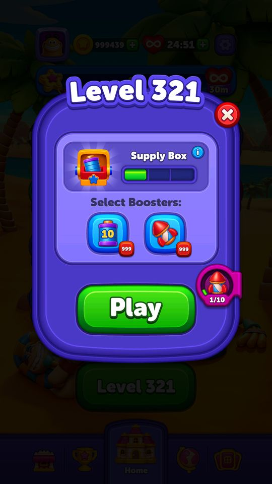


 60 coin; Rocket Race 2/3 dẫn đầu
60 coin; Rocket Race 2/3 dẫn đầu

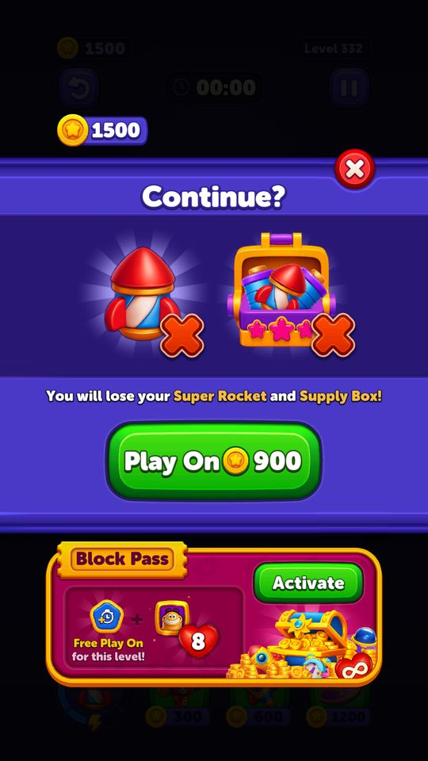
900 coin, banner Block Pass bên dưới

 1 life!" (Quit đỏ, không có Play On ở nhánh thoát chủ động)
1 life!" (Quit đỏ, không có Play On ở nhánh thoát chủ động)3. Sáu lớp bán hàng
Tóm lại: game bán theo 6 lớp, từ Shop luôn mở tới các popup chỉ hiện lúc người chơi kẹt. Với tài khoản thử, chỉ Shop, Block Pass, điểm kẹt và quảng cáo đang chạy thật; các offer theo phân khúc và Web Shop đều đang bị server tắt.
| Lớp | Bán gì | Xuất hiện khi | Ví dụ thật (07/10) |
|---|---|---|---|
| 1. Shop thường trực | Starter Bundle (mua 1 lần), 5 Bundle có No Ads, 6 gói coin | Luôn có ở tab Shop. Thiếu coin khi mua booster, thêm giờ, Refill, pre-booster thì mở popup Shop | Starter -90% 52.000 VND (1,99 USD). Brick 131.000 (4,99) → Block 263.000 (9,99) → Premium 527.000 (19,99) → Deluxe 1.300.000 (49,99) → Ultimate 2.650.000 VND (99,99). Coin: 1.000 = 52.000 → 100.000 = 2.650.000 VND |
| 2. Block Pass (pass tháng) | Mở cột thưởng trả phí, mạng tối đa 8, khung và kiểu tên trên hồ sơ, két Bonus Vault | Từ level 50. Icon cột phải, trang 2 Special Offers trong Shop, banner trong popup bỏ cuộc và popup hết mạng | 263.000 VND (block.blockpass10, 9,99 USD). Bấm giá mở bảng Google Play "Block Pass 10" |
| 3. Offer theo phân khúc + Web Shop | Special Offer (chủ đề Surf Sale / Cart Craze / Ocean Riches), Paw Touch (chèn vào popup thua khi coin < 2.000, sống 30 phút), Treasure Drill ("Dragon Treasure": pass coin theo số màn thắng), Web Shop (mua cùng gói qua web) | Server đang tắt cả 4. Mốc mở: Special Offer 55, Paw Touch 59, Treasure Drill 110, Web Shop 300 | Ép bật: Dragon Treasure 52.000 VND (block.dragontreasure2, 2 USD cho non-purchaser), 12 mốc từ 50 đến 5.000 coin, tổng 10.000. Web Shop: Pay In-App 52.000 VND hoặc Pay On-Web 1,99 USD + 500 coin. Special Offer và Paw Touch ép bật nhưng backend không gửi gói nên không có UI |
| 4. Điểm kẹt | Thêm giờ bằng coin, Refill, booster mua lẻ, banner Block Pass | Hết giờ, hết mạng, hết booster, bỏ cuộc | Add Time 900 → 1.900 coin. "More Lives" Refill 900 coin + banner Block Pass "5 → 8" |
| 5. Quảng cáo | Interstitial (AppLovin MAX), rewarded +1 mạng. Gỡ quảng cáo bằng cách mua 1 trong 5 Bundle | Interstitial từ level 70, cách nhau ≥ 240 giây, sau khi thắng / bấm Continue / chơi lại. Rewarded +1 mạng trong popup hết mạng từ level 50 (trên máy không thấy nút này vì đã tắt cấu hình quảng cáo backend). Nhân đôi coin và Play On bằng quảng cáo: tắt. Không có banner | Video AppLovin rồi quảng cáo chơi thử ngay sau màn thắng 321 (trên máy ảo không có nút đóng, phải tắt app; màn vẫn được tính) |
| 6. Coin sink trong sự kiện | Play On để giữ chuỗi / tiến độ sự kiện | Khi bỏ cuộc lúc đang có tiến độ | "Continue? You will lose your streak!" (Lily Leap 0/5) — Play On 1.900 coin |
Ghi chú cho từng lớp:
- Giá trị mỗi USD (coin quy đổi = coin + UFO × 1.200 + Rocket × 600 + Time Freeze × 300, tính từ config): Block Pass nhánh trả phí 2.322 / USD (chưa tính két và mạng), Starter 1.558, Ultimate 1.356; gói coin chỉ 503 → 1.000. Gói coin nhỏ là lựa chọn kém nhất mỗi đô; Brick Bundle (822) còn thua gói coin lớn nhất (1.000).
- Block Pass: nhánh trả phí cộng dồn 31 mốc cho 5.500 coin,
 24,5 giờ mạng vô hạn, 5 UFO, 13 Rocket, 13 Time Freeze; nhánh Free cho 1.300 coin và 735 phút mạng. Két Bonus Vault (chỉ người mua): 50 bước ×
24,5 giờ mạng vô hạn, 5 UFO, 13 Rocket, 13 Time Freeze; nhánh Free cho 1.300 coin và 735 phút mạng. Két Bonus Vault (chỉ người mua): 50 bước ×  20 chìa, mỗi bước 100 coin, tối đa 5.000. Mua giữa kỳ có được nhận bù mốc trả phí đã qua không: (chưa kiểm chứng).
20 chìa, mỗi bước 100 coin, tối đa 5.000. Mua giữa kỳ có được nhận bù mốc trả phí đã qua không: (chưa kiểm chứng). - No Ads: không có gói No Ads riêng. Mua bất kỳ Bundle nào (Brick → Ultimate) là tắt quảng cáo xen kẽ. Starter, gói coin và Block Pass không tắt quảng cáo. Quảng cáo có thưởng có vẻ vẫn chạy sau khi mua (chưa kiểm chứng đủ).
- Giá theo phân khúc: Treasure Drill có 5 giá theo segment: non-purchaser 2, poor 5, hamsi 10, dolphin 15, whale 25 USD. Special Offer (
block.special*, 0,99 → 49,99 USD) và Paw Touch (block.voyage*, 0,99 → 49,99 USD) để backend chọn gói theo segment (suy luận).

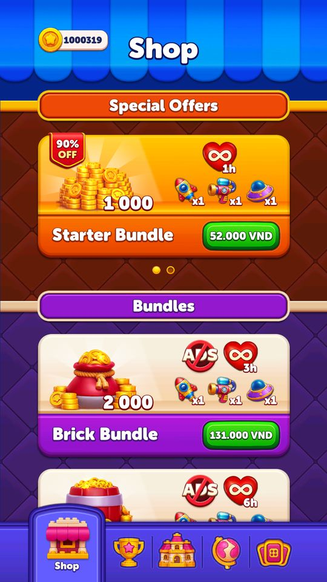
1.000 coin + 1 giờ mạng vô hạn + mỗi booster x1 = 52.000 VND (2 trang, có chấm chuyển trang); khu Bundles bắt đầu với Brick Bundle 131.000 VND
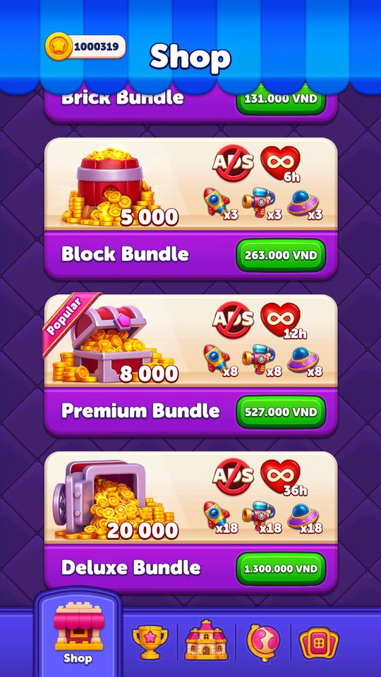
2.000 coin + 3 giờ + x1 = 131.000; Block 5.000 + 6 giờ + x3 = 263.000; Premium (Popular) 8.000 + 12 giờ + x8 = 527.000; Deluxe 20.000 + 36 giờ + x18 = 1.300.000 VND
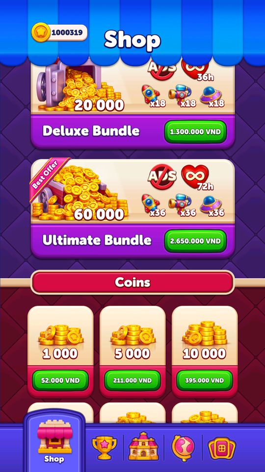
60.000 coin + 72 giờ mạng vô hạn + x36 mỗi booster + No Ads = 2.650.000 VND; tiếp theo khu Coins
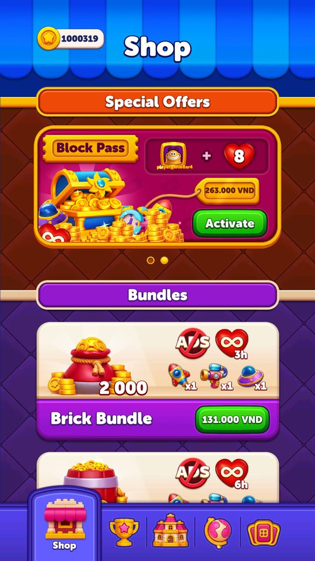
8 mạng) 263.000 VND — nút Activate mở thẳng luồng mua pass
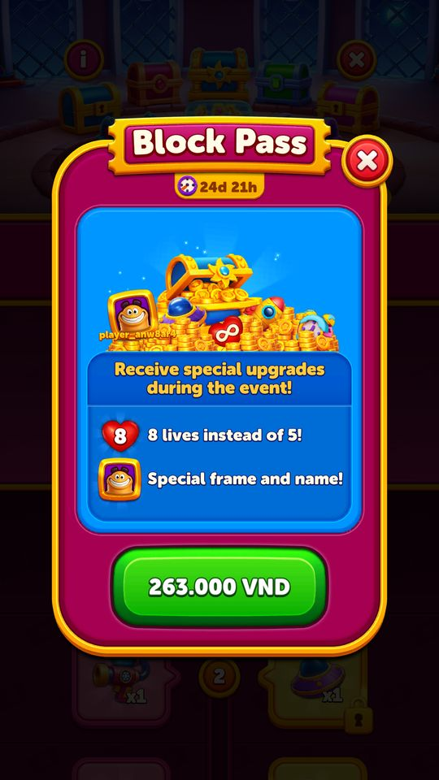
8 lives instead of 5!" và khung + kiểu tên đặc biệt trên hồ sơ trong suốt sự kiện
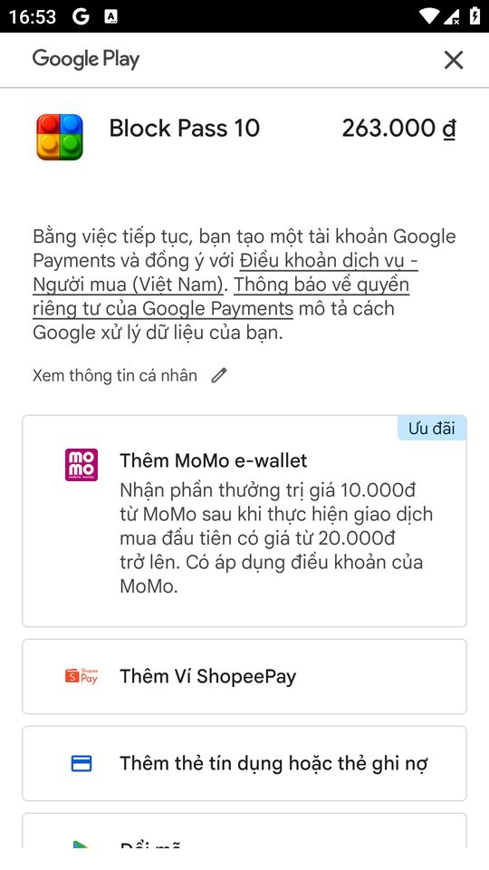

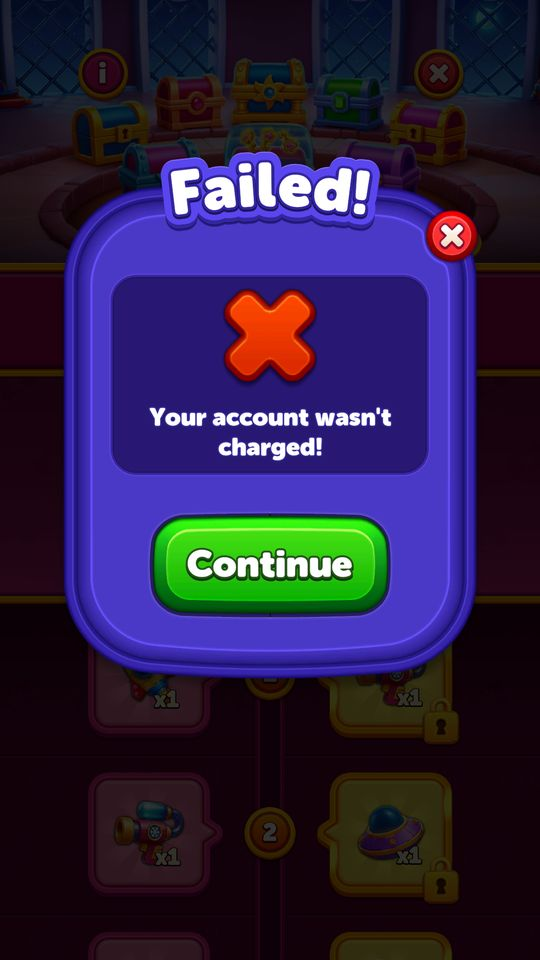
 8 mạng, nút Activate — bán pass đúng lúc kẹt
8 mạng, nút Activate — bán pass đúng lúc kẹt 10000 coins!", nút Activate 52.000 VND (gói non-purchaser block.dragontreasure2); mốc: thắng 1 màn 50, 3 màn 100, 5 màn 150, 10 màn 250, 15 màn…
10000 coins!", nút Activate 52.000 VND (gói non-purchaser block.dragontreasure2); mốc: thắng 1 màn 50, 3 màn 100, 5 màn 150, 10 màn 250, 15 màn… 500 coin, nhãn Secure Payment (không bấm thanh toán web)
500 coin, nhãn Secure Payment (không bấm thanh toán web)Offer đang tắt không có ảnh gói thật. Dưới đây là popup thua khi ép bật Paw Touch (không có gói), cùng hình offer có sẵn trong APK:


4. Các họ sự kiện
Tóm lại: 15 tính năng sự kiện, chia 4 họ: chuỗi thắng, xếp hạng, meta và trợ giúp trong màn. Gần như tất cả lấy tiến độ từ việc thắng màn. Gần một nửa (UFO Rise, Star Blaze, Lily Leap, Rocket Race, Streak Race, Super Rocket, Supply Box) phụ thuộc chuỗi thắng — thua một lần là mất chuỗi hoặc tụt mốc.
| Họ | Sự kiện (code) | Mở từ level | Cách chơi | Trạng thái 07/10 |
|---|---|---|---|---|
| Chuỗi thắng | UFO Rise (UfoRise) | 60 | Thắng liên tiếp, UFO leo tháp 11 bậc 0 → 2 → 5 → 8 → 13 → … → 120. Thua thì rơi về mốc kiểm tra gần nhất (0, 5, 13, 28, 46, 120). Mốc 120: 1.200 coin + mỗi booster 1 cái + 1 giờ mạng | Phiên cũ "Finished" lúc mở app; phiên mới đang chạy |
| Chuỗi thắng | Star Blaze (GAE) | 29 | Thanh sao giữa Home. Mỗi màn thắng cộng sao theo hệ số x1 → x5 → x10 → x25 → x100 (thắng ngay lần đầu liên tiếp); thua về x1. 25 mốc, tổng 21.811 sao, mốc cuối 2.000 coin | Đang chạy; tutorial hiện sau màn thắng 320 |
| Chuỗi thắng | Lily Leap (SkyJumpWithStage, 3 chặng) | 40 | Ghép 100 người. Chặng 1 (thấy trên máy): thắng 5 màn liên tiếp ngay lần đầu; số màn của chặng 2–3 do backend gửi, chưa thấy. Quỹ 5.000 / 7.000 / 10.000 coin chia đều cho người về đích mỗi chặng. Thua 1 màn là rớt, chờ ~25–30 phút cho lượt mới | Đang chạy |
| Chuỗi thắng | Rocket Race (JetpackRaceWithStage, 3 chặng) | 80 | Chặng 1 đua 5 người. Thắng 3 / 5 / 7 màn ngay lần đầu (chặng 1 / 2 / 3) trước người khác. "Every fail resets all your progress!" | Đang chạy; thắng chặng 1 và 2 |
| Xếp hạng | Weekly Cup (WeeklyTournament) | 21 | Nhóm ~10 người, +1 điểm mỗi màn thắng. Hạng 1 / 2 / 3 = 2.000 / 1.000 / 500 coin | Tuần cũ "Finished" (hạng 10, không thưởng); tuần mới đang chạy |
| Xếp hạng | Streak Race (StreakTournament, 24 giờ) | 25 | Mỗi màn thắng cộng cờ theo hệ số x1 / x5 / x10 / x25 / x100 của chuỗi thắng; thua về x1. Hạng 1 / 2 / 3 = 1.000 / 500 / 250 coin, hạng 4–10 = 100 coin | Đang chạy; sau 11 màn thắng liền đạt 741 cờ, hạng 3 |
| Xếp hạng | Arena / Block League (Arena) | sau màn 999 | Bộ màn riêng, điểm 1 / 3 / 5 theo độ khó. Hạng 1 / 2 / 3 = 3.000 / 2.000 / 1.000 coin, hạng 4–10 = 250 | Chưa mở (tài khoản ở level 320–350) |
| Meta | Block Pass (MagicPass) | 50 | Thắng màn nhặt chìa: thường 1, Hard 3, Super Hard 5. 31 mốc (0–30), tổng 1.014 chìa. Cột Free nhận bằng nút Claim; cột Pass khóa tới khi mua | Kỳ tháng 9 đã hết lúc mở app; kỳ mới đang chạy |
| Meta | Mission Carnival (MagicLab) | 100 | 5 chặng, mỗi chặng 4 nhiệm vụ: thắng màn Super Hard, cộng 3 nhiệm vụ lấy tiến độ từ sự kiện khác (thắng Rocket Race, bậc Star Blaze, bậc UFO Rise). Xong nhiệm vụ phải bấm CLAIM | Phiên cũ đã hết; phiên mới mở sau màn 323 |
| Meta | Collection "Nature" (Collection) | 95 | 15 bộ × 9 thẻ = 135 thẻ. Gói thẻ đến từ UFO Rise, Rocket Race, Star Blaze, Block Pass. Thẻ trùng đổi sao mở Bonus Chest 100 / 250 / 500 sao. Grand Prize 10.000 coin + huy hiệu quả sồi + x5 mỗi booster | Đang chạy; được tặng 1 gói thẻ khi mở lần đầu |
| Meta | Journey (Journey) | 10 | 48 mốc theo level, từ 10 tới 980; quanh 320–380 là mỗi 20 level (340 = 1 giờ mạng, 360 = 200 coin) | Luôn chạy |
| Meta | Daily Gift (DailyReward) | 23 | Mỗi ngày chọn 1 trong 9 hộp pixel (coin, booster hoặc mạng vô hạn) | Đang chạy; trúng 300 coin |
| Trợ giúp trong màn | Super Rocket (LightBall) | 200 | Thắng 10 màn → kích hoạt. Trong màn, xóa khối để nạp vòng; đầy thì tên lửa tự bắn phá khối. Mất khi thua | Bật (bản 15/09 còn tắt) |
| Trợ giúp trong màn | Supply Box (Butler) | 101 | 3 nấc theo chuỗi thắng ngay lần đầu: đồng hồ +5 → +5 và tên lửa → +5, +10 và tên lửa. Thua mất chuỗi | Bật (bản 15/09 còn tắt) |
| Trợ giúp trong màn | Pre-Booster (PreBooster) | 12 | Chọn trước màn tên lửa, đồng hồ +10 giây hoặc cả hai; mua 3 cái giá 1.800 / 900 coin | Bật (bản 15/09 còn tắt) |
Một màn thắng đẩy tiến độ của tới 9 tính năng cùng lúc: Block Pass, Star Blaze, UFO Rise, Lily Leap, Rocket Race, Streak Race, Weekly Cup, Super Rocket, Supply Box. Mission Carnival ăn theo các sự kiện này.
- Độ khó chỉ ảnh hưởng vài thứ: coin thắng màn (20 / 60 / 100), chìa Block Pass (1 / 3 / 5), điểm Arena (1 / 3 / 5) và nhiệm vụ Hard / Super Hard của Mission Carnival. Các sự kiện khác không theo độ khó: +1 mỗi màn thắng, riêng Star Blaze và Streak Race theo hệ số chuỗi thắng.
- Hệ số chuỗi thắng của Star Blaze và Streak Race tăng x1 → x5 → x10 → x25 → x100 rồi giữ ở x100. Ví dụ Streak Race: 11 màn thắng liền = 1 + 5 + 10 + 25 + 7 × 100 = 741 cờ, đúng số thấy trên máy.
- Khi Collection đang chạy, nhiều mốc coin / booster của Star Blaze, UFO Rise, Rocket Race, Mission Carnival, Block Pass, Daily Gift, Journey đổi thành gói thẻ (bảng thưởng
...WithCollection). Vì vậy trên máy Rocket Race chặng 1 cho50 coin + 15 phút mạng + gói thẻ, thay vì 100 coin + 15 phút mạng.
 2.000 coin, 24 = 2 giờ mạng vô hạn, 23 = UFO x1
2.000 coin, 24 = 2 giờ mạng vô hạn, 23 = UFO x1 50 coin; UFO ở mốc 0
50 coin; UFO ở mốc 0 5.000 coin
5.000 coin 5 tên lửa (mình + 4 đối thủ), mỗi màn thắng ngay lần đầu = +1, ai đủ 3 trước về nhất; rương lớn ở đích
5 tên lửa (mình + 4 đối thủ), mỗi màn thắng ngay lần đầu = +1, ai đủ 3 trước về nhất; rương lớn ở đích
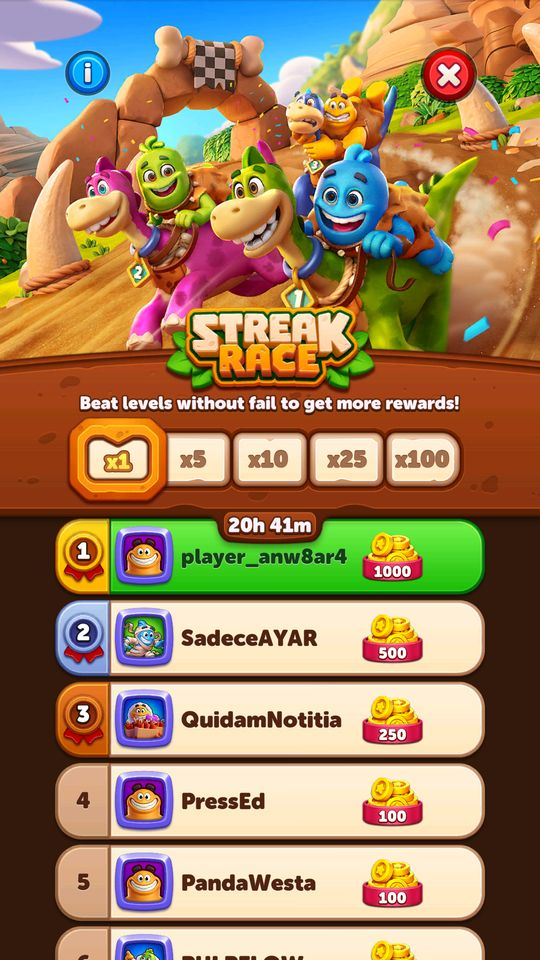
100 coin; mình đang hạng 1 vì mọi người cùng 0 điểm 500 coin; mình hạng 5, 0 điểm
500 coin; mình hạng 5, 0 điểm
 2 Rocket Race 0/2, đạt bậc 4 Star Blaze 2/4, đạt bậc 5 UFO Rise 2/5 (tiến độ tính từ sự kiện khác đang chạy)
2 Rocket Race 0/2, đạt bậc 4 Star Blaze 2/4, đạt bậc 5 UFO Rise 2/5 (tiến độ tính từ sự kiện khác đang chạy) 10.000 coin + quả sồi + x5 booster; mỗi bộ (Forest, Desert, Garden, Caves, Zen, Outdoors…) 9 thẻ kèm quà riêng; nút Bonus Chest góc trên
10.000 coin + quả sồi + x5 booster; mỗi bộ (Forest, Desert, Garden, Caves, Zen, Outdoors…) 9 thẻ kèm quà riêng; nút Bonus Chest góc trên
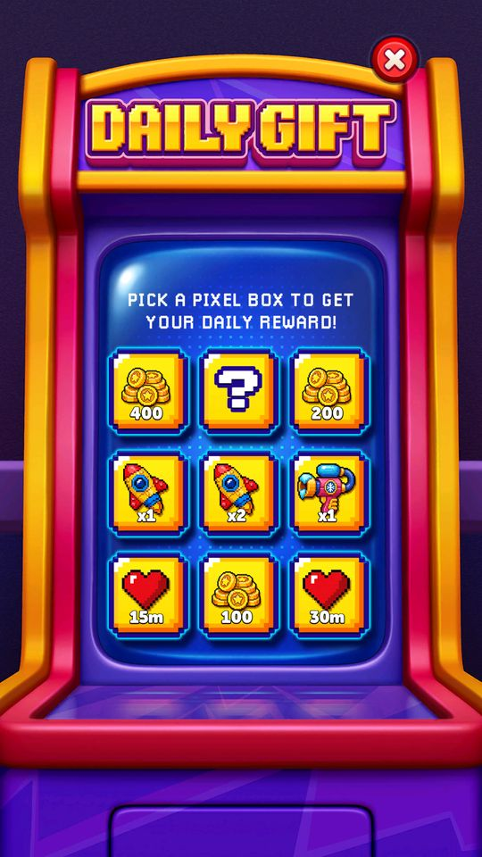
tên lửa x1/x2, pháo x1, 15 hoặc 30 phút mạng vô hạn)Ba trợ giúp trong màn đều gắn quà trực tiếp lên bàn chơi:


 1 tên lửa (khối trắng)
1 tên lửa (khối trắng)
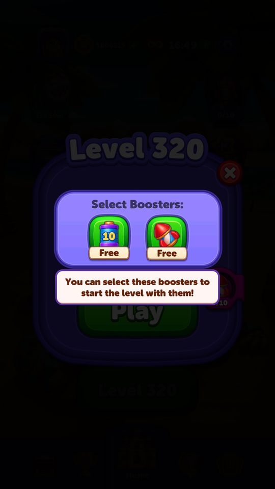
Home có 5 ô cột trái và 5 ô cột phải (LobbyEventsPositionManager). Icon đang hiện dồn lên trên theo thứ tự cố định:
- Trái: Arena → Streak Race → Lily Leap → UFO Rise → Rocket Race.
- Phải: Super Rocket → Block Pass → Mission Carnival → Treasure Drill → Special Offer.
Mỗi cột chỉ có đúng 5 loại icon cho 5 ô, nên khác Magic Sort, không sự kiện nào bị mất icon vì hết chỗ (suy luận từ danh sách nút). Star Blaze không chiếm ô: nó là thanh tiến độ giữa Home, khi hiện thì đẩy hai cột icon xuống. Weekly Cup nằm ở tab Leaderboard, Collection và Journey là trang riêng ở thanh dưới, Daily Gift nằm trong Shop. Ảnh dưới: 4 icon cột trái ngày 07/10, thanh Star Blaze đẩy icon xuống, và Dragon Treasure (ép bật) vào ô 4 cột phải.

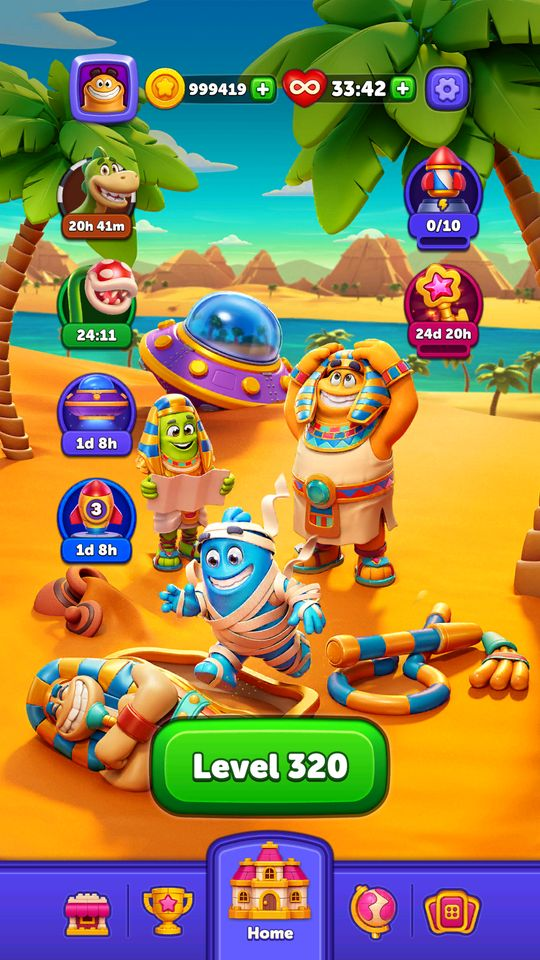

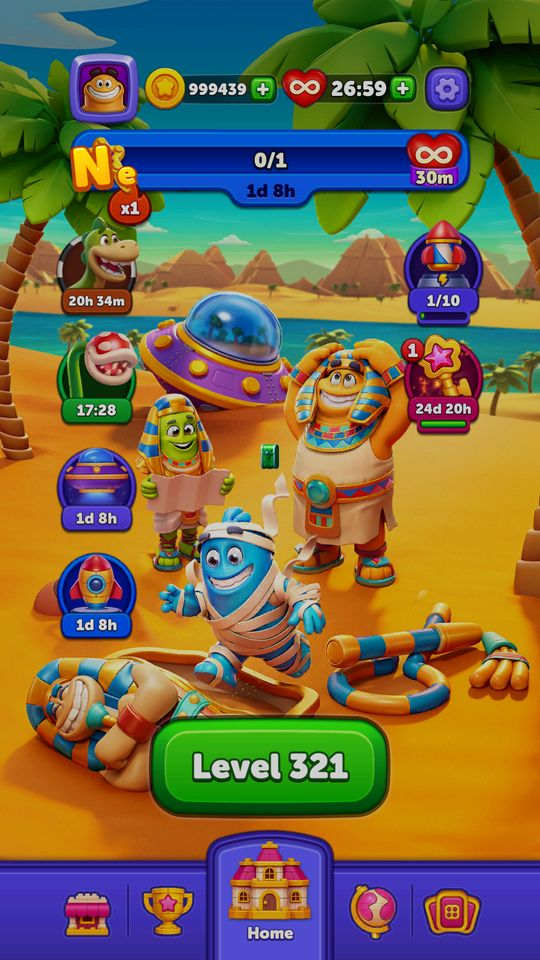
30 phút mạng vô hạn) đẩy các icon xuống; Super Rocket 1/10; icon Block Pass có huy hiệu 1 (chìa mới)
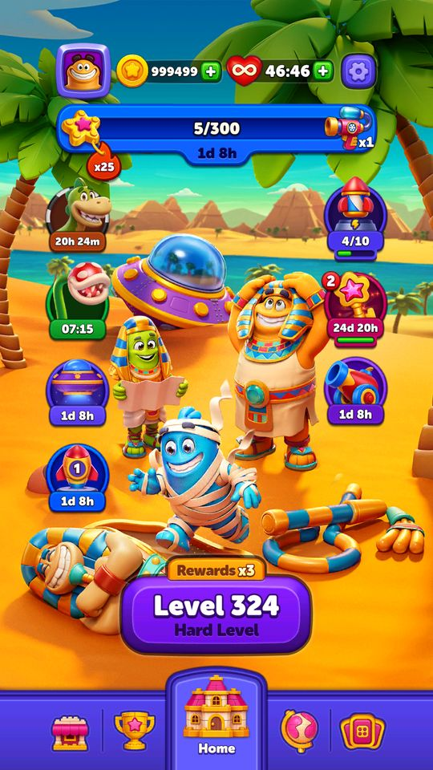

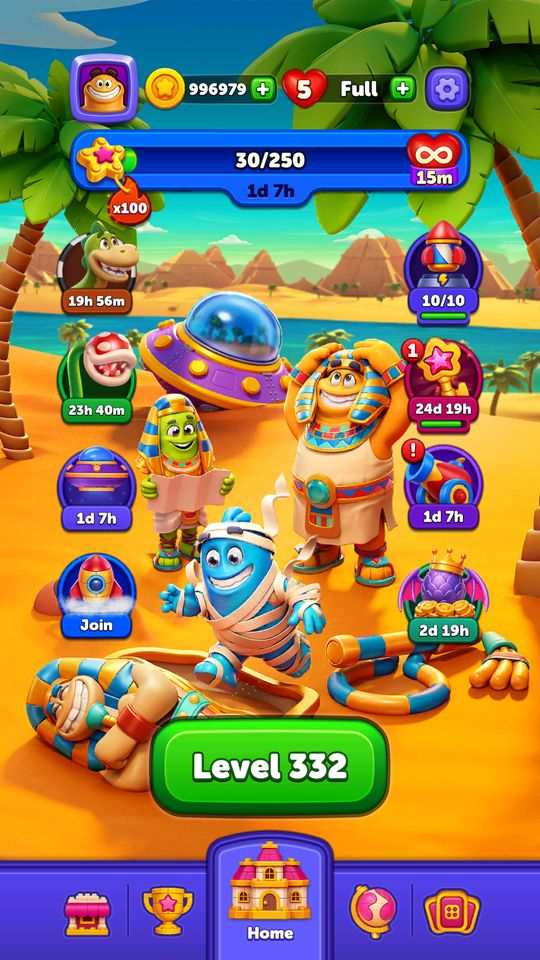
5. Vòng đời một sự kiện
Tóm lại: mọi sự kiện đi qua cùng một chuỗi trạng thái: tắt → chưa đủ level → chưa có dữ liệu → giới thiệu → tham gia → đang chạy → hết giờ → nhận thưởng. Người chơi thấy 4 bước: luật chơi lần đầu, nút Start / Join, màn hình tiến độ, rồi kết quả.
1. Chưa hiện gì: server tắt (isEnabled), level dưới firstLevelToShow, hoặc backend chưa gửi phiên. Lịch phiên do backend cấp, client lưu cache. 2. Giới thiệu lần đầu: lần đầu gặp sự kiện (thường là khi về Home sau màn thắng, hoặc khi mở app), popup luật tự mở. Trên máy: Star Blaze, Collection ("New Collection Started!" kèm 1 gói thẻ), Mission Carnival sau màn thắng; Streak Race khi mở lại app. 3. Tham gia:
- Sự kiện đua cần bấm Start. Lily Leap ghép đủ 100 người cùng trình độ.
- Rocket Race lần Start đầu tặng 30 phút mạng vô hạn; đua lại lần 2 trong phiên thì không tặng.
- UFO Rise, Star Blaze, Block Pass tự chạy, không cần Join. Weekly Cup bấm Continue để sang tuần mới.
- Rocket Race lần Start đầu tặng
4. Đang chạy: icon Home hiện thời gian còn lại hoặc thứ hạng. Thắng màn thì popup tiến độ tự mở khi về Home (UFO bay lên mốc, sao bay vào thanh Star Blaze, nhân vật Lily Leap nhảy lá súng, số người còn lại giảm 100 → 85 → 70). 5. Kết thúc:
- Thắng chặng: "Congratulations! You've won the race!" → Claim → mở chặng sau, dài hơn và thưởng lớn hơn.
- Thua: "You lost the race!" (Rocket Race, Join lại được ngay) hoặc "You failed the challenge" (Lily Leap, chờ ~25–30 phút cho lượt mới).
- Hết phiên: nhãn "Finished", popup kết quả, nhận thưởng hạng / mốc. Block Pass còn mốc chưa nhận thì tự trao ("Your Unclaimed Rewards!"). Code tách 2 bước: hết giờ trên máy (
LocalTimeIsUp) rồi chờ server chốt (RemoteTimeIsUp). - Xem kết quả xong, icon biến mất cho tới phiên mới.
Ví dụ Rocket Race, từ lúc mời tham gia tới khi thắng và thua chặng:

 30 phút mạng vô hạn — Tap to Claim
30 phút mạng vô hạn — Tap to Claim

 1 Rocket Race: tên lửa của mình bay tới đích hạng 1 — "Congratulations! You've won the race!", nút Claim nhận rương chặng
1 Rocket Race: tên lửa của mình bay tới đích hạng 1 — "Congratulations! You've won the race!", nút Claim nhận rương chặng 50 coin + 15 phút mạng vô hạn + 1 gói thẻ
50 coin + 15 phút mạng vô hạn + 1 gói thẻ 2 Rocket Race (Stage 1 đã tích): "Beat 5 Levels before others" — chặng sau dài hơn, thưởng lớn hơn
2 Rocket Race (Stage 1 đã tích): "Beat 5 Levels before others" — chặng sau dài hơn, thưởng lớn hơn
Ví dụ Lily Leap (vào đua → tiến độ → rớt → chờ lượt mới), UFO Rise hết phiên và Block Pass chuyển kỳ:

 3 rương Stage 1/2/3, Grand Prize 5.000 coin; nút Start
3 rương Stage 1/2/3, Grand Prize 5.000 coin; nút Start
 5.000 coin cho người về đích; qua chặng sau thưởng lớn hơn; thua 1 màn là rớt thử thách
5.000 coin cho người về đích; qua chặng sau thưởng lớn hơn; thua 1 màn là rớt thử thách


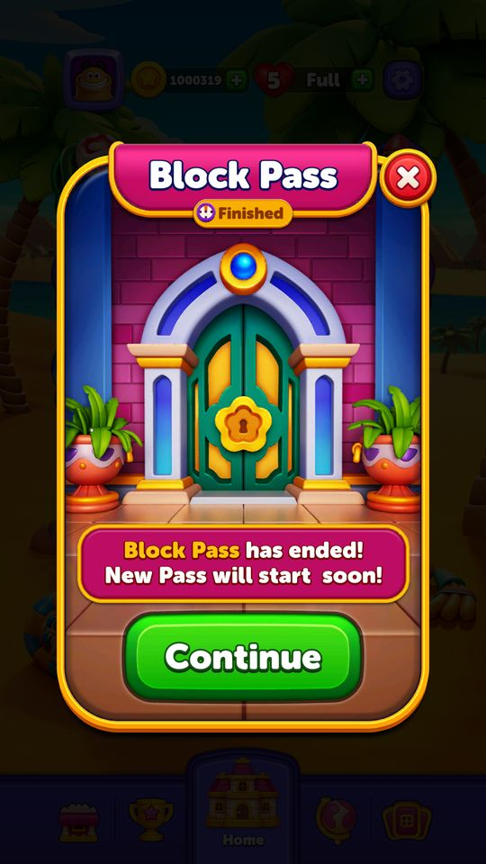
 15 phút mạng vô hạn
15 phút mạng vô hạn 15 phút mạng vô hạn, Pass tăng mạng tối đa lên 8; mốc 1–2: tên lửa, pháo, UFO
15 phút mạng vô hạn, Pass tăng mạng tối đa lên 8; mốc 1–2: tên lửa, pháo, UFO6. Một buổi chơi thật (07/10, level 320 → 350)
Tóm lại: đi từ level 320 tới 350, game kéo ra chuỗi popup sự kiện sau gần như mỗi màn thắng; khi về Home sau màn thắng, thứ tự khớp danh sách ưu tiên trong code. Giới hạn popup đã bị tắt khi chụp, nên người chơi thật sẽ thấy ít popup hơn mỗi lần về Home.
| Lúc | Popup / màn hình hiện ra (theo thứ tự) |
|---|---|
| Mở app (đầu phiên, level 320) | Daily Gift (chọn 1 trong 9 hộp, trúng 300 coin) → Block Pass "has ended!" → "Your Unclaimed Rewards!" (15 phút mạng) → Home có icon Block Pass kỳ mới. Bấm icon thì thấy: Lily Leap mời Start, UFO Rise "Finished" rồi phiên mới, Super Rocket 0/10, Mission Carnival "Finished" |
| Vào màn 320 lần đầu | Hướng dẫn Pre-Booster → popup trước màn → 3 popup "Brand-New Look" (Duration Blocks, Gem Blocks, Layer Blocks: vật cản đổi hình, cơ chế giữ nguyên) |
| Thua 320 (bố cục thật, hết giờ) | Out Of Time: Add Time 900 → lần 2 1.900 → X → "Continue? You will lose your streak!" (Lily Leap, Play On 1.900 + banner Block Pass) → "Continue? You will lose 1 life!" → "Lily Leap — You failed the challenge" → "Level Failed!" → về Home: Rocket Race (Start, tặng 30 phút mạng) → luật Rocket Race → bảng đua |
| Mở lại app | Lily Leap "Finished — Challenge failed", lượt mới sau 24:59 → luật Streak Race (lần đầu) → bảng Streak Race |
| Thắng 320 | "PERFECT!" 20 coin + banner Rocket Race → về Home: tutorial Star Blaze → bảng Star Blaze → "New Collection Started!" (tặng gói thẻ) → mở gói 4 thẻ → luật Collection |
| Thắng 321 | Hướng dẫn Supply Box trước màn → thắng → quảng cáo xen kẽ AppLovin (video, rồi quảng cáo chơi thử không đóng được → tắt app) |
| Mở lại app sau 321 | UFO Rise lên mốc 2 → rương gói thẻ → Star Blaze lên x5 |
| Thắng 322 | "PERFECT!" 20 coin, không còn quảng cáo (đã tắt cấu hình quảng cáo backend) → Star Blaze 5/10, x10 → Rocket Race "You lost the race!" → Home: Rocket Race lại nhãn Join |
| Thắng 323 | (Đua lại Rocket Race, không còn tặng mạng) → Supply Box đầy 3/3 → thắng, Rocket Race 1/3 → Star Blaze qua mốc 10 sao (gói thẻ), lên x25 → luật Mission Carnival phiên mới → bảng Mission Carnival |
| Thắng 324 (Hard) | "Hard — PERFECT!" 60 coin, Rocket Race 2/3 → Star Blaze x100 (30/300 sao) → UFO Rise lên mốc 5 (15 phút mạng) |
| Thắng 325 | Rocket Race 3/3 → "You've won the race!" → thưởng chặng 1: 50 coin + 15 phút mạng + gói thẻ → mở thẻ → mở chặng 2 (5 màn) |
| Thắng 326–328 | Rocket Race chặng 2 1/5 → Star Blaze qua 300 sao (pháo x1) → UFO Rise mốc 8 → hết thời gian chờ, icon Lily Leap lại nhãn Join → popup thắng 328 chỉ gắn 1 banner (Rocket Race) → Lily Leap 1/5, còn 85/100 người |
| Thắng 329 (Super Hard) | "Super Hard — PERFECT!" 100 coin, Rocket Race 4/5 → Lily Leap 2/5, còn 70/100 → "Super Rocket is now active!" |
| Thắng 330 | Super Rocket chạy trong màn → thắng chặng 2 Rocket Race → 150 coin + 45 phút mạng + gói thẻ xanh → mở chặng 3 (7 màn). Streak Race: x100, 741 cờ, hạng 3 |
| Các màn sau đó | Khi Rocket Race chờ chặng mới, popup thắng đổi sang banner UFO Rise (UFO tới mốc 13). Hết mạng (sửa tạm về 0): "More Lives" Refill 900 + banner Block Pass |
| Thua có chủ đích (trước màn 350) | Out Of Time (Paw Touch ép bật, coin hạ tạm còn 1.500, nhưng không có gói) → "You will lose your Super Rocket and Supply Box!" (Play On 900) → "You will lose your streak!" (Lily Leap 4/5) → Lily Leap rớt → "Level Failed!" (Supply Box về 0, Streak Race về x1) → Home: 4 mạng, Star Blaze x1, Super Rocket 0/10 |
| Màn 350 (bố cục thật) | "Connected Blocks! New Item Unlocked!" → Pause → Quit: "Are You Sure? You will lose 1 life!" (không có Play On) → "Level Failed!" |
Ghi chú để đọc đúng bảng:
- Giới hạn popup đã tắt khi chụp. Người chơi thật: tối đa 2 popup tự mở mỗi lần về Home và 3 mỗi đầu phiên (
popUpLimitConfigModel). Bước trao thưởng, animation và vài popup giới thiệu được ép hiện (ShouldShowForce) nên không bị chặn: Star Blaze, Super Rocket, Collection kích hoạt, Block Pass. Các popup UFO Rise, Treasure Drill, Lily Leap, Rocket Race, Special Offer, Daily Gift, Mission Carnival, Streak Race, Weekly Cup chỉ hiện nếu lượt về Home đó chưa đủ 2 popup được tính. - Chơi liền màn (
ContinuousLevelsConfigModel, live: bật, mốc 10) chỉ áp dụng cho 9 màn đầu: khi cờ bật vàLevelProgress < ContinuousLevelsConfigModel.Level(10) thì gọiContinuousLevelInitState(vào thẳng màn kế); ngược lại về Home. Tức chơi liền màn chỉ áp dụng cho 9 màn đầu. Ở level 320+ người chơi thật luôn về Home sau khi thắng, nên việc tắt cờ này lúc chụp không làm thay đổi bảng trên. - Thứ tự popup khi thắng (27 lệnh của
ReturnToHomeSequenceService, rút gọn): Lily Leap tăng bậc → Star Blaze (tutorial, thanh) → coin thắng màn → Journey → icon Home → Super Rocket (tutorial, kích hoạt) → Collection kích hoạt → đổi tên → quà → UFO Rise → Treasure Drill → kết quả Lily Leap → Rocket Race → Special Offer → Daily Gift → Rate Us → Block Pass (tutorial, kết thúc) → Arena → Mission Carnival → Streak Race → Lily Leap Join → Weekly Cup. Offer (Treasure Drill, Special Offer) nằm giữa danh sách, sau UFO Rise.

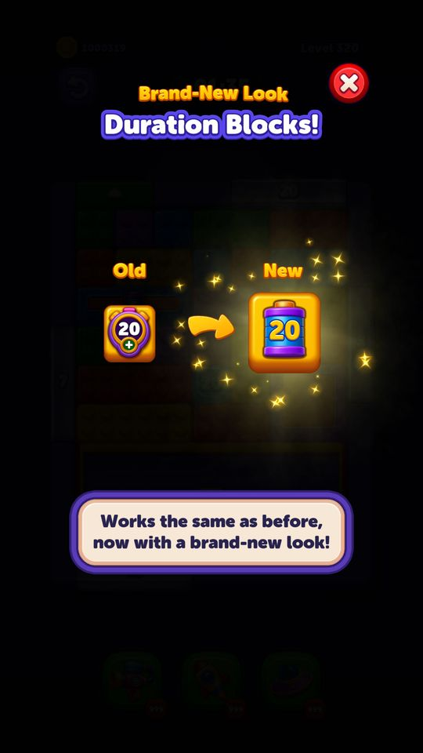

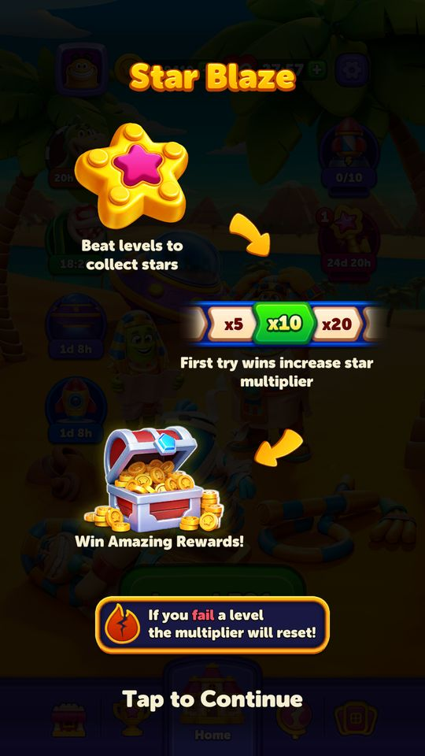


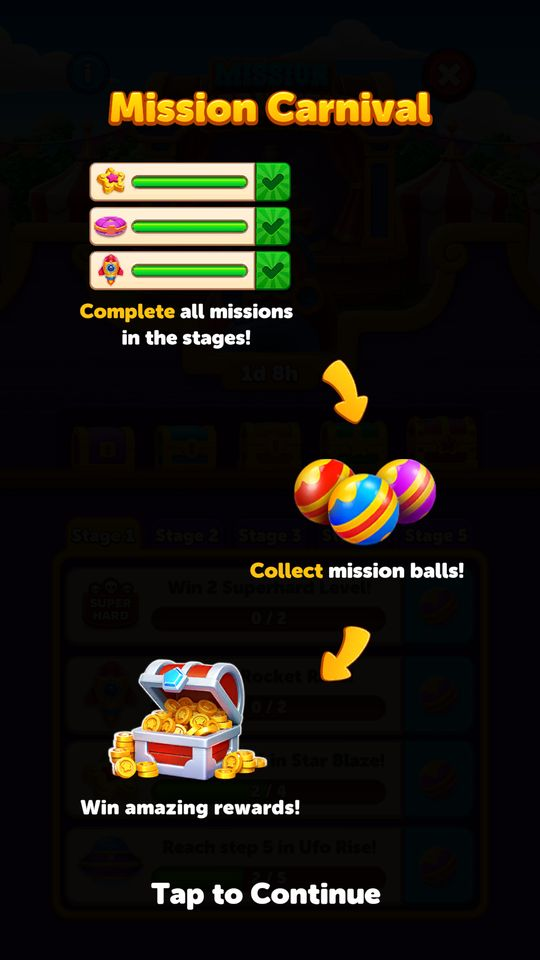

 150 coin + 45 phút mạng vô hạn + gói thẻ xanh
150 coin + 45 phút mạng vô hạn + gói thẻ xanh 250 coin), hạng 1 có 798 cờ
250 coin), hạng 1 có 798 cờ

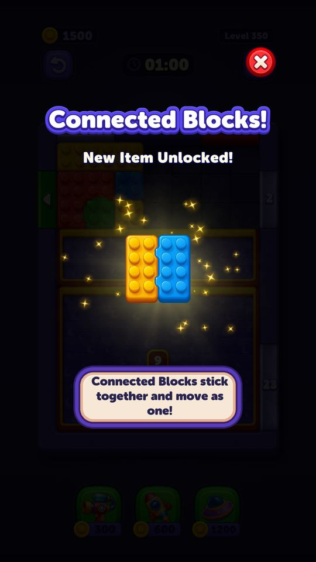
7. Lịch sự kiện của tài khoản thử
Tóm lại: gần như mọi ranh giới phiên rơi vào 07:00 hoặc 19:00 UTC (14:00 hoặc 02:00 giờ VN); ngoại lệ là Collection bắt đầu lúc 09:00 UTC. Star Blaze, UFO Rise, Mission Carnival và Rocket Race chạy Thứ Hai 07:00 → Thứ Năm 19:00; Lily Leap, Streak Race, Daily Gift theo ngày; Weekly Cup đổi tuần Thứ Hai 07:00, Block Pass theo tháng, Collection theo mùa (lịch kỳ sau là suy luận).
Phiên còn lưu trong cache trên máy (playerprefs, từ lần chơi cuối 22–23/09; mọi giờ là UTC). Segment của tài khoản: non-purchaser.
| Sự kiện | Bắt đầu | Kết thúc | Độ dài |
|---|---|---|---|
Collection (collection_2) | 31/08 09:00 (T2) | 30/11 07:00 (T2) | ~91 ngày |
| Block Pass | 01/09 07:00 (T3) | 01/10 07:00 (T5) | 30 ngày |
| Star Blaze | 21/09 07:00 (T2) | 24/09 19:00 (T5) | 84 giờ |
| UFO Rise | 21/09 07:00 (T2) | 24/09 19:00 (T5) | 84 giờ |
| Mission Carnival | 21/09 07:00 (T2) | 24/09 19:00 (T5) | 84 giờ |
| Daily Gift | 22/09 07:00 (T3) | 23/09 07:00 (T4) | 24 giờ |
| Weekly Cup | 23/09 00:30 (có vẻ là lúc vào nhóm, suy luận) | 28/09 07:00 (T2) | tới T2 07:00 |
| Lily Leap, Rocket Race, Streak Race | không có trong cache | – | do backend cấp; Streak Race 24 giờ theo config |
Đồng hồ thấy trên máy ngày 07/10 (Thứ Tư). Ảnh chụp trong khoảng 16:48–18:14 giờ VN (09:48–11:14 UTC), theo giờ lưu file ảnh. Cộng thời gian còn lại vào giờ chụp thì ra ngày kết thúc ở cột cuối (suy luận); tất cả đều khớp mốc 07:00 hoặc 19:00 UTC.
| Sự kiện | Thời gian còn lại trên ảnh | Kết thúc suy ra (UTC) |
|---|---|---|
| Block Pass kỳ mới | 24 ngày 21 giờ | 01/11 07:00 |
| Collection "Nature" | 53 ngày 20 giờ | 30/11 07:00 — cùng phiên với cache |
| Weekly Cup tuần mới | 4 ngày 20 giờ | 12/10 07:00 (T2) |
| Star Blaze | 1 ngày 8 giờ | 08/10 19:00 (T5) |
| UFO Rise phiên mới | 1 ngày 9 giờ | 08/10 19:00 (T5) |
| Mission Carnival phiên mới | 1 ngày 8 giờ | 08/10 19:00 (T5) |
| Rocket Race | 1 ngày 8 giờ | 08/10 19:00 (T5) |
| Lily Leap | 21 giờ 4 phút (sau khi Start, bảng đua đếm 23 giờ 59 phút) | 08/10 07:00 (T5) |
| Streak Race | 20 giờ 41 phút | 08/10 07:00 (T5) |
| Dragon Treasure (ép bật) | 2 ngày 19 giờ | 10/10 07:00 (T7) |
Nhịp tuần (suy luận, ghép cache và đồng hồ trên máy; chưa có phiên thứ hai trong cache để xác nhận):
- Ranh giới chuẩn là 07:00 UTC. Nhóm 84 giờ kết thúc lúc 19:00 UTC. Ngoại lệ: Collection bắt đầu lúc 09:00 UTC.
- Thứ Hai 07:00 → Thứ Năm 19:00: Star Blaze, UFO Rise, Mission Carnival, và Rocket Race theo đồng hồ trên máy. Mission Carnival có nhiệm vụ gắn với Star Blaze, UFO Rise, Rocket Race nên khung trùng là hợp lý. Nửa tuần còn lại (Thứ Năm 19:00 → Thứ Hai 07:00) nhiều khả năng là phiên thứ hai.
- Mỗi ngày 07:00: Daily Gift, Streak Race (24 giờ), và Lily Leap theo đồng hồ trên máy.
- Thứ Hai 07:00: Weekly Cup đổi tuần.
- Ngày 1 hằng tháng 07:00: Block Pass đổi kỳ. Collection chạy theo mùa ~13 tuần.

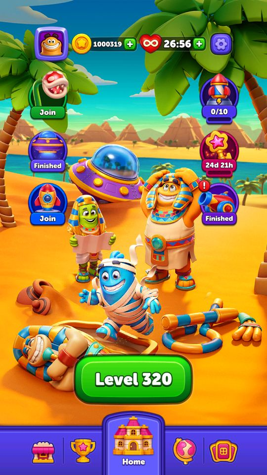
300 coin Daily Gift, mạng vô hạn 26:56 (thưởng pass), icon Block Pass (chìa, còn 24 ngày 21 giờ) thêm vào cột phải

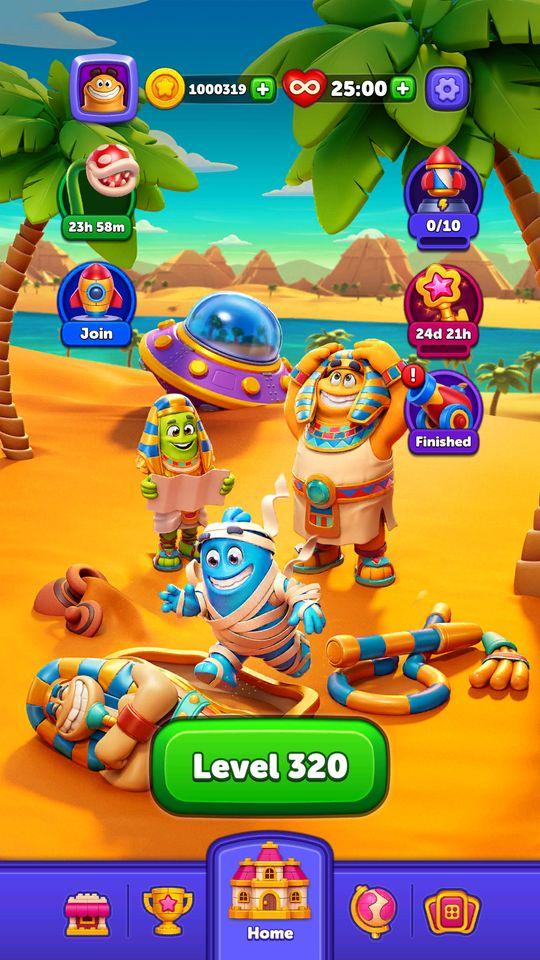

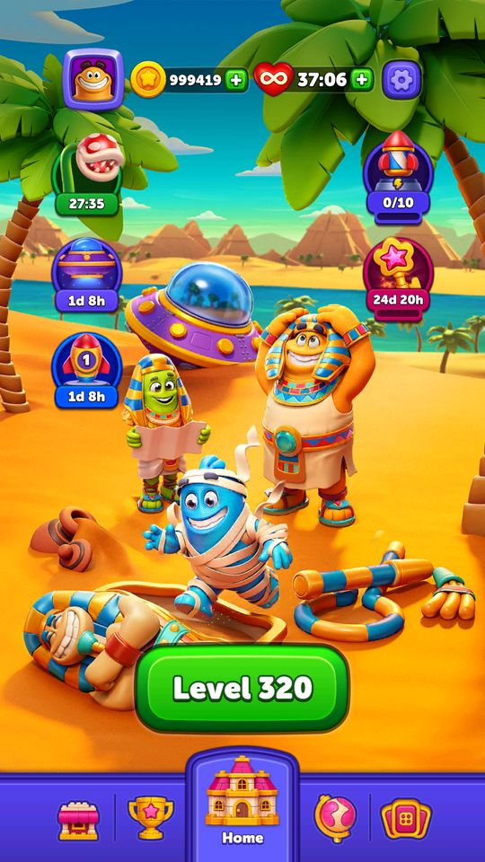

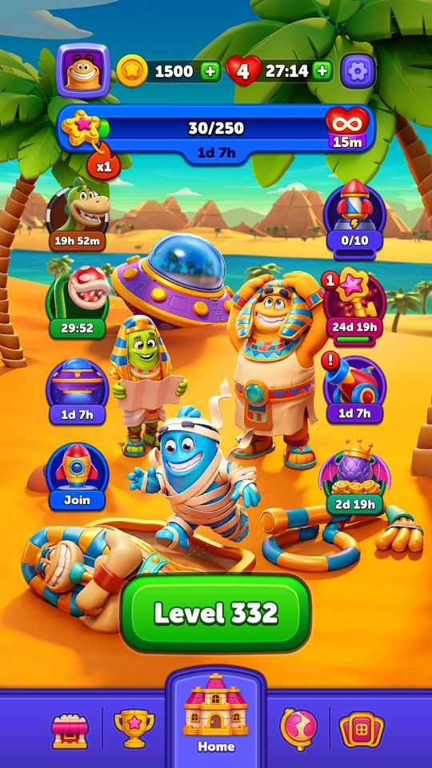
4 mạng, Star Blaze x1, Super Rocket 0/10, Lily Leap chờ lượt mới 29:52